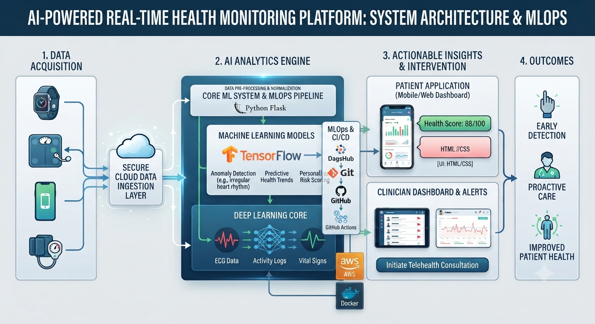

Project 05
AgroVision
Developed an end-to-end deep learning application for plant disease classification using TensorFlow, Python, and Flask, with Docker, AWS, DagsHub (MLOps), GitHub Actions, and HTML/CSS for automated deployment and web-based inference.
View source on GitHub ↗
Plant disease classification
TensorFlow and Python provide the deep learning workflow, with Flask and an HTML/CSS interface for web-based inference.
Deployment workflow
Docker, AWS, DagsHub, and GitHub Actions support the application’s automated deployment and MLOps workflow.